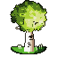
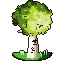
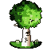
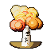
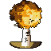
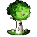
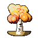
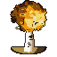

Spring → Summer

Fresh growth deepens into full summer green — a slow, passive sway.
A single white-bark birch as a seasonal game tile — four still tiles and three season-to-season transitions. v2 reworks the canopy into textured foliage, calms the motion to a passive drift, and gives autumn → winter a real leaf-fall: individual leaves detach, pile up, then snow buries the branches and the pile.
v1 (top) and v2 (bottom) for each season. Same silhouette and palette family; v2 trades smooth blobs for lit, dappled leaf-mass.




Each plays once and lands exactly on the next season's tile (seam-perfect). v2 motion is gentle; the autumn → winter beat is fully reworked.

Fresh growth deepens into full summer green — a slow, passive sway.

Chlorophyll fades; the crown turns through gold to amber.


Leaves detach one by one and gather into a pile; then snow blankets the bare branches and finally buries the pile.